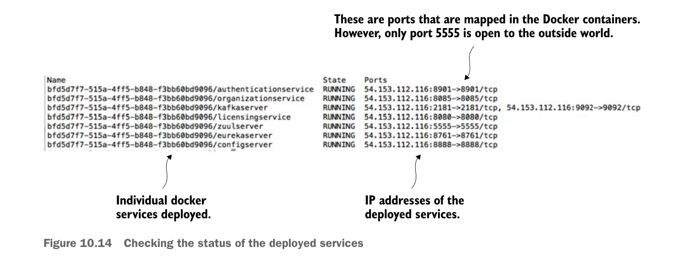

Lệnh này sẽ thực thi bản build Maven bằng parent POM nằm ở thư mục gốc của project. File pom.xml cha được thiết lập để build tất cả các service bạn sẽ triển khai trong chương này. Sau khi Maven chạy xong, bạn có thể triển khai các Docker image lên instance ECS mà bạn đã thiết lập trước đó ở mục 10.1.3. Để triển khai, hãy chạy lệnh sau:
ecs-cli compose --file docker/common/docker-compose.yml upClient dòng lệnh ECS cho phép bạn triển khai container bằng file Docker-compose. Nhờ cho phép tái sử dụng file Docker-compose từ môi trường phát triển trên desktop, Amazon đã đơn giản hóa đáng kể việc triển khai service lên Amazon ECS. Sau khi client ECS chạy xong, bạn có thể xác minh các service đang chạy và tìm địa chỉ IP của server bằng lệnh sau:
ecs-cli psHình 10.14 hiển thị kết quả của lệnh ecs-cli ps.

Kiểm tra trạng thái các service đã triển khai
Hãy chú ý ba điểm từ kết quả trong hình 10.14:
- Bạn có thể thấy bảy container Docker đã được triển khai, mỗi container chạy một service của bạn.
- Bạn có thể thấy địa chỉ IP của cụm ECS (54.153.122.116).
- Có vẻ như bạn đã mở các cổng khác ngoài cổng 5555. Thực tế không phải vậy. Các mã cổng trong hình 10.14 là ánh xạ cổng cho container Docker. Tuy nhiên, cổng duy nhất mở ra bên ngoài là cổng 5555. Hãy nhớ rằng khi thiết lập cụm ECS, trình hướng dẫn thiết lập ECS đã tạo security group Amazon chỉ cho phép lưu lượng qua cổng 5555.